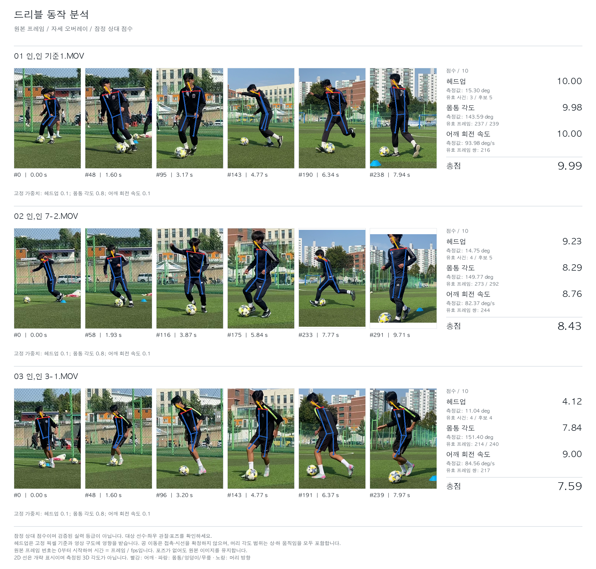

Provisional scores; not validated skill grades. Inspect subject identity and pose quality.
Fixed calibration and weights are not fitted to these video labels. Any weight override is recorded per video. Missing measurements remain N/A. Displayed figure scores use two decimals; tables retain supplied precision.

239 source frames · 29.974916387959865 fps
| Metric | Raw value | Unit | Score / 10 | Reason | Samples / details |
|---|---|---|---|---|---|
| Head-up | 15.30499039887986 | deg | 10.0 | — | valid_events: 3; valid_frames: 99; valid_samples: 3; candidate_events: 5; source_frames: 239 |
| Trunk | 143.5943938332341 | deg | 9.984308516415991 | — | valid_frames: 237; valid_samples: 237; source_frames: 239 |
| Shoulder speed | 93.97937984951204 | deg/s | 9.99941084026602 | — | valid_frames: 217; valid_pairs: 216; valid_samples: 216; source_frames: 239 |
| Total | Weighted score | 9.987387897159396 | As supplied by the report. | ||
Fixed weights for this report: Head-up: 0.1; Trunk: 0.8; Shoulder speed: 0.1
Quality: warnings: Provisional frozen relative scores; not validated skill grades. No grade training or per-video refitting.; Automatic numeric masks do not validate subject identity or left/right landmark identity; inspect the source video.; Head ball proxies retain fixed pixel thresholds (80 px jumps, 40 px/frame interpolation, 200 px ankle distance, 10 px prominence); source width 1920 px and camera framing can change acceptance.; Head ranges include upward and downward motion; ball direction changes are proxies, not confirmed contacts or gaze.; source_frames: 239; excluded_frames: 0; invalid_visibility_values: 0; missing_metrics:
292 source frames · 29.974337040205302 fps
| Metric | Raw value | Unit | Score / 10 | Reason | Samples / details |
|---|---|---|---|---|---|
| Head-up | 14.747729632801066 | deg | 9.232111434403677 | — | valid_events: 4; valid_frames: 132; valid_samples: 4; candidate_events: 5; source_frames: 292 |
| Trunk | 149.7652133460551 | deg | 8.29194922612161 | — | valid_frames: 273; valid_samples: 273; source_frames: 292 |
| Shoulder speed | 82.36560223084275 | deg/s | 8.763704305465305 | — | valid_frames: 246; valid_pairs: 244; valid_samples: 244; source_frames: 292 |
| Total | Weighted score | 8.433140954884188 | As supplied by the report. | ||
Fixed weights for this report: Head-up: 0.1; Trunk: 0.8; Shoulder speed: 0.1
Quality: warnings: Provisional frozen relative scores; not validated skill grades. No grade training or per-video refitting.; Automatic numeric masks do not validate subject identity or left/right landmark identity; inspect the source video.; Head ball proxies retain fixed pixel thresholds (80 px jumps, 40 px/frame interpolation, 200 px ankle distance, 10 px prominence); source width 1920 px and camera framing can change acceptance.; Head ranges include upward and downward motion; ball direction changes are proxies, not confirmed contacts or gaze.; source_frames: 292; excluded_frames: 0; invalid_visibility_values: 0; missing_metrics:
240 source frames · 29.975020815986678 fps
| Metric | Raw value | Unit | Score / 10 | Reason | Samples / details |
|---|---|---|---|---|---|
| Head-up | 11.036884758058584 | deg | 4.1186788702070345 | — | valid_events: 4; valid_frames: 132; valid_samples: 4; candidate_events: 4; source_frames: 240 |
| Trunk | 151.40101288767556 | deg | 7.843328010484222 | — | valid_frames: 214; valid_samples: 214; source_frames: 240 |
| Shoulder speed | 84.56406853132286 | deg/s | 8.997621232691065 | — | valid_frames: 218; valid_pairs: 217; valid_samples: 217; source_frames: 240 |
| Total | Weighted score | 7.586292418677188 | As supplied by the report. | ||
Fixed weights for this report: Head-up: 0.1; Trunk: 0.8; Shoulder speed: 0.1
Quality: warnings: Provisional frozen relative scores; not validated skill grades. No grade training or per-video refitting.; Automatic numeric masks do not validate subject identity or left/right landmark identity; inspect the source video.; Head ball proxies retain fixed pixel thresholds (80 px jumps, 40 px/frame interpolation, 200 px ankle distance, 10 px prominence); source width 1920 px and camera framing can change acceptance.; Head ranges include upward and downward motion; ball direction changes are proxies, not confirmed contacts or gaze.; source_frames: 240; excluded_frames: 0; invalid_visibility_values: 0; missing_metrics: